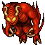

Recursos do Jogo
Diferentemente dos RPGs de console, Tibia não possui um objetivo predeterminado a ser alcançado: os jogadores determinam a forma como desejam seguir as suas aventuras assim como outros jogos de MMORPG, e o mundo continua existindo e mudando mesmo que os jogadores não estejam lá.
Quests
O que são?
Quests são missões em que um jogador ou vários jogadores resolvem enigmas para receber uma recompensa, grande parte das quests têm como desafio matar alguma criatura. Para completar algumas você precisa ter um level mínimo.
Propósito
Elas tem diversos propósitos, entre eles ganhar algum dinheiro, receber algum item, obter acesso a alguma área ou simplesmente para diversão.
Como eu começo uma?
Existem 2 tipos de quests, algumas estão simplesmente escondidas em cavernas, e talvez você precise resolver algum enigma ou matar alguma criatura para chegar até a recompensa. Outras você pode começar conversando com um NPC, geralmente falando mission.
Criaturas 
Criaturas são os habitantes de Tibia junto de jogadores humanos. Toda criatura de tipo diferente tem suas próprias características que os fazem únicos.
Criaturas compartilham todo o mundo de Tibia, assim elas podem ser encontrados em qualquer parte. Elas geralmente ficarão com outras criaturas do próprio tipo, e criaturas diferentes preferem ambientes diferentes.
É por isso que você pode achar Deers e Rabbits em lugares gramíneos. Slime sempre será achado próxima água (normalmente subterrâneo), Dwarves passam a maior parte do tempo dentro das Dwarf Mines e Demons preferem as profundezas da terra. Normalmente, os lugares mais perigosos são os mais difíceis de alcançar.
No tibia podemos categorizar muitos monstros pela a sua classe, mais também podemos classifica-los pelo o seu tipo de aparição (a facilidade que encontramos eles), o que simplifica o suficiente para categorizamos em 5 tipos existentes:
- Os normais, que são encontrados facilmente no seus locais de origem. Exemplo: Deers e Rabbits.
- Os bosses, que são encontrados raramente em locais em que os mesmos da sua classe estão ou em locais específicos. Exemplo: Dharalion e Orshabaal
- Os de Eventos, que só são encontrados de tempos em tempos e apenas nestes eventos. Exemplo: Devovorga e Undead Jester.
- Os de quest, que só aparecem quando você está fazendo uma determinada quest ou em locais específicos da quest. Exemplo: Glitterscale e Enraged Squirrel.
- E as invocações, que somente aparecem quando quando um determinado monstro ou ação, os invoca. Exemplo: Dwarf Henchman.
Alguns podem ser considerados em mais de uma categoria.